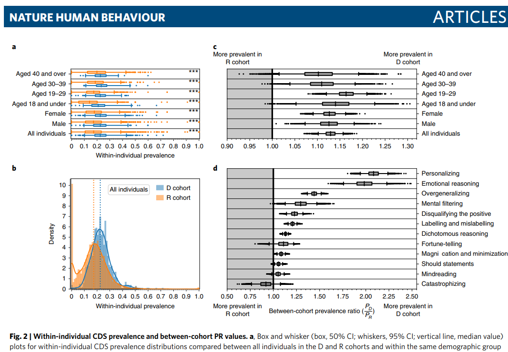
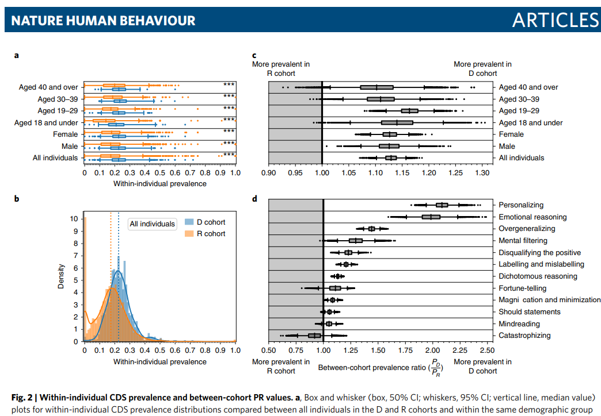

Surveys of Online Cohorts for Internalizing symptoms And Language (SOCIAL)
Learn more about our study on social media and mental health!
About SOCIAL
The Surveys of Online Cohorts for Internalizing symptoms And Language
(SOCIAL) are a collaboration between researchers at Indiana University’s departments of:
The studys represent an interdisciplinary approach to studying mental
health that triangulates self-report with data and meta-data obtained
from the social media platform Twitter.
We have several SOCIAL studies completed or ongoing:
SOCIAL-I: We surveyed a nationally
representative sample of 1123 U.S. adults and administered a
transdiagnostic battery of symptom assessments that correspond to the Hierarchical
Taxonomy of Psychopathology (HiTOP) model. We also obtained their
consent to access their Twitter accounts. Individuals were recruited
from July 2020 to March 2021 for a study on “social media and mental
health.” The sample was selected to approximate the U.S. populations on
the intersections of age, gender, and race/ethnicity.
SOCIAL-II: All individuals in SOCIAL-I were
Twitter users. Accordingly, we could not ascertain the role that being a
Twitter user itself has on potential differences between individuals in
baseline sociodemographics, social media use, and mental health
symptoms. To have a sample of individuals who did not use Twitter as
well as to have an additional sample in which to assess the
transportability of results from SOCIAL-I, we began the
SOCIAL-II study. SOCIAL-II recruited college
students from a predominantly White and Asian university in the
Midwest. Individuals were compensated for credit in an introductory
psychology course. Individuals were recruited from September 2020 to the
present. We have over 2,015 participants.
SOCIAL-III: This study is scheduled to have an
overlapping battery with SOCIALs I and II and will use snowball sampling
of Twitter users.
SOCIAL-IV:
SOCIAL-IV is a bit different in that it is a clinical trial where we
also collect social media data! The results of SOCIALs I, II, and III
will be used to train classifiers of somatoform, internalizing fear,
internalizing distress, and disinhibited externalizing symptoms to track
these in SOCIAL-IV participants.
Background
Social media is a relatively recent development. As
of 2021, over 75% of adults in the United States are on a
social media platform. That alone makes social media an interesting
topic to study.
Most relevant to our work, there are reported
correlations between social media use and poorer mental
health. Many individuals worry that social media use causes
poorer mental health, at least in some people. While we do not know if
this is true, social media is also interesting from a research
perspective because people openly talk about their mental health and
some social media behaviors can clue you in to people’s mental health
(e.g., when individuals discuss feeling sad). Moreover, we can make
inferences about people mental health and emotions based on their
behavior. For example, in one
study, we looked at the timing of activity on Twitter as an index of
a person’s sleep/wake cycle. We found differences between Twitter users
who reported being depressed and a random sample suggesting that people
who were depressed were more active into the night and less active early
in the morning. Watch me talk about this study below (on a social media
platform of course):
In
another study, we tracked the language of depressed Twitter
users vs. a random sample of Twitter users. We specifically looked at
the vocabulary of these individuals to try to pinpoint cognitive
distortions in their language. Cognitive distortions are a concept from
cognitive-behavioral therapy that refer to thinking that is rigid,
inflexible, and tends to be unrealistically negative. In that study, we
found that depressed Twitter users tended to use more of the language
that we identified as cognitive-distorted than a random sample.

What did we measure?
We followed simple principles for choosing measures for this study.
First, we wanted to have a good coverage of the symptoms of
psychopathology that are represented by the Hierarchical
Taxonomy of Psychopathology (HiTOP) model. Second, we wanted to do
research that was accessible and could be reproduced by others. Because
of this, we focused on freely-available measures, usual the DSM
Severity Measures endorsed by the American Psychiatric Association.
Below are the measures that we used for all of SOCIALs I and II.
Spectra
Construct
Measure
SOCIAL-I
SOCIAL-II
SOCIAL-III
Somatoform
Pain
PHQ-15
Yes
Yes
Yes
Insomnia
ISI
Yes
Yes
Yes
Distress
Negative affect
PID
No
Yes
Yes
Depression
PHQ-9
Yes
Yes
Yes
Stress
MIDUS
Yes
Yes
No
Worry
DSM
Severity
Yes
Yes
Yes
Social anxiety
DSM
Severity
Yes
Yes
Yes
Fear
Panic
DSM
Severity
Yes
Yes
Yes
Agoraphobia
DSM
Severity
Partial
Partial
No
Disinhibition
Disinhibition
PID
No
Yes
Yes
Alcohol use
AUDIT
Yes
Yes
Yes
Substance use
DSM
Severity
Yes
Yes
Yes
Antagonism
Antagonism
PID
No
Yes
Yes
Thought disorder
Psychoticism
PID
No
Yes
Yes
Mania
ASRM
Partial
Partial
No
Eating
Restrictive intake
EDEQ
No
Yes
Yes
Body concerns
EDEQ
No
Yes
Yes
Food insecurity
USDA
No
Yes
Yes
Detachment
Detachment
PID
No
Yes
Yes
Social support
ESSI
No
Yes
Yes
Results
Analyses are ongoing!
About SOCIAL
The Surveys of Online Cohorts for Internalizing symptoms And Language (SOCIAL) are a collaboration between researchers at Indiana University’s departments of:
The studys represent an interdisciplinary approach to studying mental
health that triangulates self-report with data and meta-data obtained
from the social media platform Twitter.


We have several SOCIAL studies completed or ongoing:
SOCIAL-I: We surveyed a nationally representative sample of 1123 U.S. adults and administered a transdiagnostic battery of symptom assessments that correspond to the Hierarchical Taxonomy of Psychopathology (HiTOP) model. We also obtained their consent to access their Twitter accounts. Individuals were recruited from July 2020 to March 2021 for a study on “social media and mental health.” The sample was selected to approximate the U.S. populations on the intersections of age, gender, and race/ethnicity.
SOCIAL-II: All individuals in SOCIAL-I were Twitter users. Accordingly, we could not ascertain the role that being a Twitter user itself has on potential differences between individuals in baseline sociodemographics, social media use, and mental health symptoms. To have a sample of individuals who did not use Twitter as well as to have an additional sample in which to assess the transportability of results from SOCIAL-I, we began the SOCIAL-II study. SOCIAL-II recruited college students from a predominantly White and Asian university in the Midwest. Individuals were compensated for credit in an introductory psychology course. Individuals were recruited from September 2020 to the present. We have over 2,015 participants.
SOCIAL-III: This study is scheduled to have an overlapping battery with SOCIALs I and II and will use snowball sampling of Twitter users.
SOCIAL-IV: SOCIAL-IV is a bit different in that it is a clinical trial where we also collect social media data! The results of SOCIALs I, II, and III will be used to train classifiers of somatoform, internalizing fear, internalizing distress, and disinhibited externalizing symptoms to track these in SOCIAL-IV participants.
Background
Social media is a relatively recent development. As of 2021, over 75% of adults in the United States are on a social media platform. That alone makes social media an interesting topic to study.
Most relevant to our work, there are reported correlations between social media use and poorer mental health. Many individuals worry that social media use causes poorer mental health, at least in some people. While we do not know if this is true, social media is also interesting from a research perspective because people openly talk about their mental health and some social media behaviors can clue you in to people’s mental health (e.g., when individuals discuss feeling sad). Moreover, we can make inferences about people mental health and emotions based on their behavior. For example, in one study, we looked at the timing of activity on Twitter as an index of a person’s sleep/wake cycle. We found differences between Twitter users who reported being depressed and a random sample suggesting that people who were depressed were more active into the night and less active early in the morning. Watch me talk about this study below (on a social media platform of course):
In another study, we tracked the language of depressed Twitter users vs. a random sample of Twitter users. We specifically looked at the vocabulary of these individuals to try to pinpoint cognitive distortions in their language. Cognitive distortions are a concept from cognitive-behavioral therapy that refer to thinking that is rigid, inflexible, and tends to be unrealistically negative. In that study, we found that depressed Twitter users tended to use more of the language that we identified as cognitive-distorted than a random sample.

What did we measure?
We followed simple principles for choosing measures for this study.
First, we wanted to have a good coverage of the symptoms of
psychopathology that are represented by the Hierarchical
Taxonomy of Psychopathology (HiTOP) model. Second, we wanted to do
research that was accessible and could be reproduced by others. Because
of this, we focused on freely-available measures, usual the DSM
Severity Measures endorsed by the American Psychiatric Association.
Below are the measures that we used for all of SOCIALs I and II.
| Spectra | Construct | Measure | SOCIAL-I | SOCIAL-II | SOCIAL-III |
|---|---|---|---|---|---|
| Somatoform | Pain | PHQ-15 | Yes | Yes | Yes |
| Insomnia | ISI | Yes | Yes | Yes | |
| Distress | Negative affect | PID | No | Yes | Yes |
| Depression | PHQ-9 | Yes | Yes | Yes | |
| Stress | MIDUS | Yes | Yes | No | |
| Worry | DSM Severity | Yes | Yes | Yes | |
| Social anxiety | DSM Severity | Yes | Yes | Yes | |
| Fear | Panic | DSM Severity | Yes | Yes | Yes |
| Agoraphobia | DSM Severity | Partial | Partial | No | |
| Disinhibition | Disinhibition | PID | No | Yes | Yes |
| Alcohol use | AUDIT | Yes | Yes | Yes | |
| Substance use | DSM Severity | Yes | Yes | Yes | |
| Antagonism | Antagonism | PID | No | Yes | Yes |
| Thought disorder | Psychoticism | PID | No | Yes | Yes |
| Mania | ASRM | Partial | Partial | No | |
| Eating | Restrictive intake | EDEQ | No | Yes | Yes |
| Body concerns | EDEQ | No | Yes | Yes | |
| Food insecurity | USDA | No | Yes | Yes | |
| Detachment | Detachment | PID | No | Yes | Yes |
| Social support | ESSI | No | Yes | Yes |
Results
Analyses are ongoing!